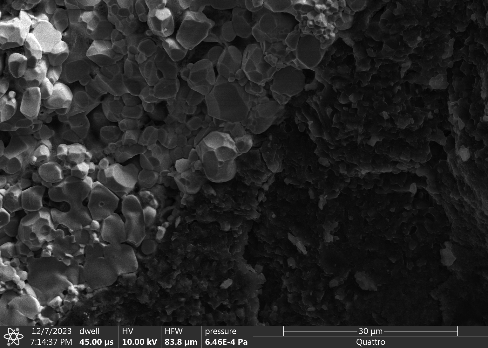
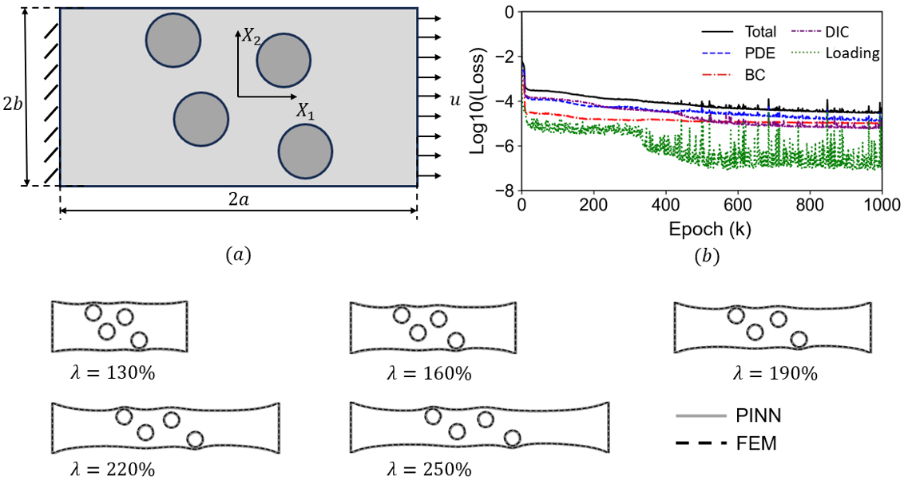

🔬 My Research Projects

📘 Controlling Dendrite Growth in LLZTO
Exploring the role of external stress in nucleating and guiding lithium dendrites within garnet-type solid electrolytes.

📘 Identifying Constitutive Parameters for Complex Hyperelastic Solids using PINNs
In this paper, we introduce a new PINN-based framework designed to identify material parameters for soft materials, specifically those exhibiting complex constitutive behaviors, under large deformation in plane stress conditions. Distinctively, our model emphasizes training PINNs with multi-modal time-dependent experimental datasets consisting of full-field deformation and loading history, ensuring algorithm robustness even amidst noisy data. Our results reveal that our framework can accurately identify constitutive parameters of the incompressible Arruda-Boyce model for samples with intricate geometries, maintaining an error below 5\%, even with an experimental noise level of 5\%.
🌀 Crease Instability
The crease pattern is a localized deformation mode with significant deformation nonlinearity near the crease tip. Like the Peach-Koehler force acting on the dislocation, the crease is exerted by the thermodynamic driving force provided by the external compression stress and the image stress field of boundaries. Regardless of how the crease core is introduced, e.g., via the point force or the geometry defect, its growth is governed by the configurational force.